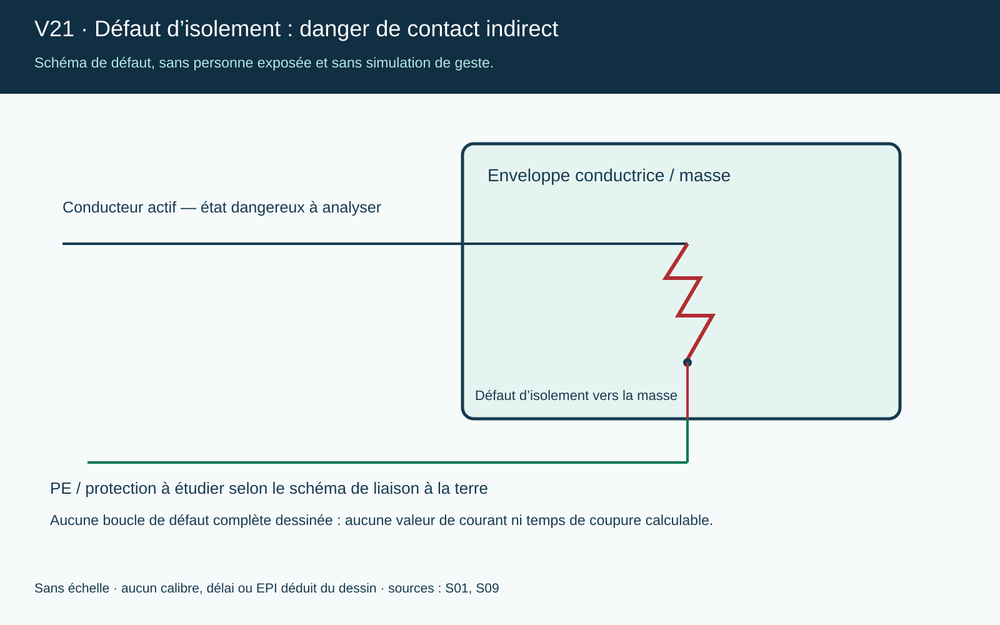
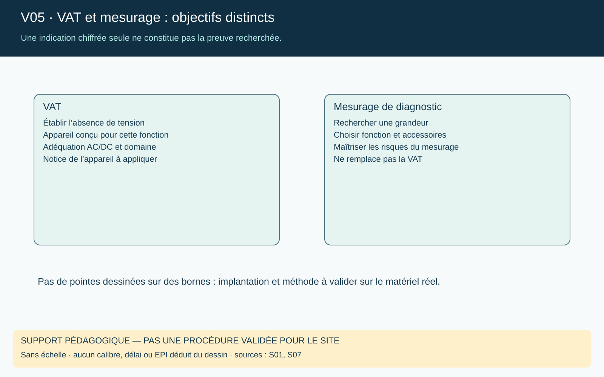
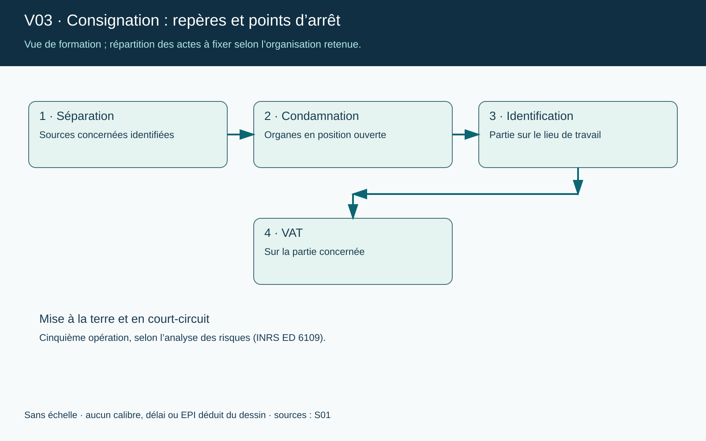

Consulteam
Retours d’expérience
Chiffres et enseignements tirés de sources publiques, avec leur année et leur périmètre. Les chiffres ne sont pas comparables entre eux : chaque ligne dit ce qu’elle compte.
Ce que montrent les chiffres
| Année | Chiffre | Périmètre |
|---|---|---|
| 2023 | 529 accidents, 5 décès (contact direct) | Tous secteurs, au moins 4 jours d’arrêt, risque connu (CNAM) |
| 2014 | 6 933 accidents, 14 décès, 413 727 journées perdues | Activité « travaux d’installation électrique » (163 726 salariés), pas tous les accidents électriques |
| 1984–2004 | Moins de 5 % des 18 628 accidents | Base EPICEA ; d’origine électrique selon l’élément matériel |
Le contact direct est la cause majoritaire en 2023 : 356 cas sur 529.
Circonstances et causes récurrentes
- Intervention sans consignation : sectionnement de câbles, arc lors du remplacement d’un disjoncteur, intervention sur un coffret sans coupure accessible.
- Travaux près de réseaux enterrés ou aériens, sans repérage préalable.
- Mise sous tension accidentelle d’un matériel, notamment des installations basse tension et des machines (10 % de la classe « accidents électriques » d’EPICEA).
- Non-application de procédure, manque de préparation de l’activité.
- Victime non habilitée, ou habilitation inadaptée.
- Plusieurs intervenants, coordination défaillante.
Comprendre les mécanismes

Distinguer les mécanismes pour choisir les mesures de prévention.

Comprendre pourquoi une masse peut devenir dangereuse à la suite d’un défaut.

Empêcher la substitution d’un multimètre ou d’un détecteur sans contact à la VAT.

Reconnaître les étapes sans confondre arrêt et consignation.
Un cas détaillé : électrocution dans une armoire de commande
Les faits (cas suisse, publié par la Suva). Un serrurier métallique ne peut pas démarrer son poste de soudage et ne trouve pas l’électricien d’exploitation. Il prend seul la clé de l’armoire, coupe l’interrupteur principal, croyant l’installation hors tension, et ouvre l’armoire. La clé tombe derrière le dispositif de protection ; il le retire pour la récupérer, penche la tête dans la zone d’alimentation et touche des parties encore sous 400 volts. Un collègue le retrouve inanimé ; il est décédé.
La date et le lieu ne sont pas indiqués. Source : Suva, exemple d’accident. Le cadre légal cité est suisse ; seuls les faits sont repris ici.
Ce qui a manqué, selon la Suva
- Accès à l’armoire non réglementé dans l’entreprise.
- Personne ni autorisée ni formée aux installations électriques.
- L’électricien d’exploitation n’a pas été attendu.
- Dispositif de protection contre les contacts retiré.
- Installation crue hors tension : l’interrupteur principal ne coupait pas toute l’alimentation.
À relier à la journée : séquences 4 et 5 (VAT, consignation, identification) ; cas C01 et C09.
Cas d’école pour l’animation
Ce cas peut servir de question au groupe : « Quelle étape de la consignation aurait changé l’issue ? » Réponse attendue : la vérification d’absence de tension sur l’ouvrage, que l’interrupteur principal ne remplace pas. Les opérations de consignation sont celles de l’INRS ED 6109.
Poussières de farine : ce que montrent les données
Dans la base ARIA, de 1975 à 2023, 553 incendies ou explosions ont été recensés en meuneries (535 en France métropolitaine) : 94 % d’incendies, 6 % d’explosions. Les explosions ont fait 2 morts et 20 blessés ; les incendies, 23 blessés. Les équipements les plus souvent en cause : silo, séchoir, broyeur. Parmi les 25 accidents avec victime, les sources d’inflammation les plus fréquentes sont les travaux par point chaud, l’auto-échauffement et la friction mécanique ; une catégorie « électrique » existe mais son effectif n’est pas précisé.
Source : INRS, Hygiène et sécurité du travail, explosions de poussières en meuneries. La base ARIA n’est pas exhaustive. Chiffres relevés par lecture automatique : à confirmer sur le document avant de les citer en salle.
Pour aller plus loin
- Base EPICEA (INRS) : cas d’accidents graves et mortels.
- EPICEA, bilan des accidents enregistrés (INRS).
- INRS, accidents d’origine électrique.